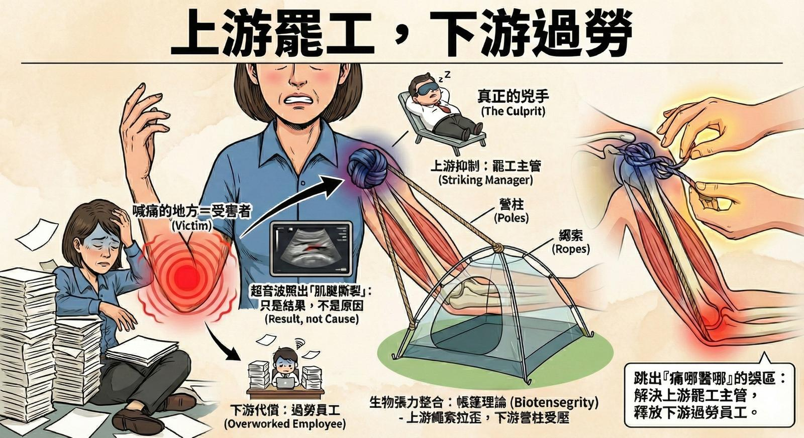

手肘痛了數個月、超音波照出撕裂傷...最後兇手竟然是「肩膀」！
【手肘痛了數個月、超音波照出撕裂傷...最後兇手竟然是「肩膀」！】⛺️👨💼
最近診間來了一位患者，因為手肘疼痛，已經困擾了好幾個月。
起因是一次意外的拉扯動作加上撞擊，讓手痛得舉不起來，從此陷入反覆疼痛的循環。
這段時間以來，患者幾乎把能做的治療都做了一輪：
❌ 傳統針灸、物理徒手治療
❌ 因為超音波照出「肌腱撕裂」，嘗試了增生注射
❌ 各種高階儀器、電波治療
即便針對「手肘」做了這麼多努力，疼痛卻像口香糖一樣黏著不放，甚至出現手肘活動時「卡卡」的聲響與摩擦感，嚴重影響日常生活與睡眠品質。
「為什麼都治不好？」
遇到這種頑固的疼痛，通常提示我們必須換個角度：「痛哪裡醫哪裡」可能行不通，因為喊痛的地方，往往只是受害者。
經過脈象與觸診的詳細評估，發現真正的兇手其實在上游的「肩膀」。神奇的是，治療肩關節後，手肘的疼痛與關節活動的卡卡感竟然當場就大幅改善！
這其中的道理，其實可以用「帳篷」與「職場關係」來解釋：
1️⃣ 身體就像一頂「帳篷」 (生物張力整合 Biotensegrity)
想像我們的身體是一頂帳篷，骨頭是「營柱」，筋膜與肌肉是「繩索」。這頂帳篷是靠著繩索的張力撐起來的。
當身體受傷時，巨大的拉力雖然讓手肘感到疼痛，但其實整個上半身的「繩索張力」都已經亂掉了。如果上游肩膀的繩索拉得太緊或太歪，下游的手肘營柱就會承受巨大的壓力。
這時候，你一直去修補那根快被壓垮的營柱（手肘）是沒有用的，唯有把上游拉歪的繩索（肩膀張力）調整回來，帳篷才會穩，手肘才會鬆。
2️⃣ 上游罷工，下游過勞 (抑制與代償)
這就是身體裡的職場倫理，我們稱之為「上游抑制，下游代償」。
當肩膀因為舊傷產生「神經肌肉抑制（Inhibition）」而不出力或活動受限時，為了完成手臂的動作，力量就會透過肌筋膜鏈（Myofascial Chains）不正常地傳遞到手肘。
這時的手肘，就像是公司裡那個「被迫加班的員工」，因為承擔了不該他做的工作，導致過勞而發炎（甚至肌腱撕裂）。
試想，如果公司一直逼這個員工打針、吃藥、做電療，叫他「撐下去」，會有用嗎？當然沒用。
我們必須解決的，是那個「罷工的主管」（肩膀），讓主管恢復正常運作，員工（手肘）才能真正獲得休息。
👨⚕️ 給久痛不癒的你一個建議
人體是個複雜的生物體，透過各種牽連、抑制與代償而相輔相成來完成日常大大小小的活動。
產生的「疼痛」，甚至造成有型結構損傷的「撕裂」，有時候是「結果」而不是「原因」。
當我們不再只盯著受傷的裂縫看，而是退一步觀察整體的張力結構與工作分配，往往就能找到解開疼痛枷鎖的鑰匙。
#中醫針傷 #徒手治療 #肌筋膜 #生物張力整合 #手肘疼痛 #網球肘 #肩膀 #代償機制 #臨床案例分享
(免責聲明：本文案例僅供衛教分享，每位個案身體狀況不同，實際治療計畫需由專業醫師評估後執行。)
太初中醫診所 東門中醫
中醫師 黃彥鈞
---
📚 延伸閱讀與科學實證 (References)
1. 為什麼肩膀會害手肘痛？（筋膜的力量傳遞）
研究發現，肌肉產生的力量有高達 30-40% 不是直接作用在骨頭上，而是透過「筋膜」傳遞到隔壁的關節。這證實了肩膀的張力異常，絕對有能力讓手肘「卡住」或疼痛。
出處：Huijing, P. A. (2009). Journal of Biomechanics.
2. 治療肩膀真的能救手肘嗎？
臨床研究顯示，對於手肘疼痛（如網球肘）的患者，若能同時檢查並治療肩膀與肩胛骨的控制能力，疼痛改善的效果遠比只治療手肘來得好。
出處：Lucado, A. M., et al. (2012). Journal of Orthopaedic & Sports Physical Therapy.
3. 人體張力結構理論 (Biotensegrity)
Levin 醫師提出的生物張力整合模型解釋了，人體骨骼其實是懸浮在軟組織張力網中的。這解釋了為何局部的衝擊會造成遠端的結構壓力。
出處：Levin, S. M. (2002). Journal of Mechanics in Medicine and Biology.
